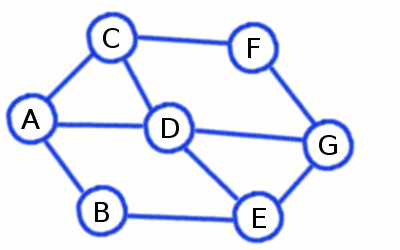

A busca em largura é uma maneira de buscar no grafo que funciona de maneira semelhante ao escoamento de água.

Imagem retirada de https://www.codeabbey.com/index/task_view/breadth-first-search
Utilizamos uma Fila Q para guardar os vértices visitados.
É possível modificarmos o algoritmo de busca geral em grafos com a finalidade de obter mais informações,
tal como a classificação de arestas, útil, por exemplo, determinar se um grafo é bipartido.
A Busca em Largura produz uma árvore de busca em largura. Sua análise é interessante para obter informações sobre o grafo.
- F - Fila: utilizada para guardar os vértices marcados.
- L(v) = i (Largura do Vértice v): v é o i-ésimo vértice a entrar (= a sair) de F.
- π(v) = p : Vértice que marca v = pai de v na árvore de busca.
- nivel(v) : Nível do vértice v na árvore de busca.
Classificação de Arestas
Se nível(u) = nível(v)
- π(u) = π(v): uv é aresta irmão
- π(u) ≠ π(v): uv é aresta primo
Se nível(u) ≠ nível(v)
- π(v) = u: uv é aresta de árvore
- π(v) ≠ u: uv é aresta tio
Algoritmo: BFS
Observação: O algoritmo é uma extensão da busca geral em grafos.
Em negrito, estão as novas alterações que estamos fazendo com a finalidade de obter novas informações sobre o grafo.
Observe também as adições a VISITE1 e VISITE2.
Entrada: Grafo G = (V, E) conexo e raíz de busca r ∈ V(G)
Saída: Listagem de todas as arestas de G
- Para todo v ∈ V(G)\{r}, faça:
- c(v) ← 0
- c(r) ← 1
- nível(r) ← 0
- π(r) ← r
- F ← {r}
- Enquanto F ≠ ∅, faça:
- Seja v ∈ F
- se existe w ∈ Adj(v) com vw não visitada:
- se c(v) = 0, então:
- c(w) ← 1
- F ← F ∪ {w}
- VISITE1(vw)
- senão, VISITE2(vw)
- senão:
- c(v) ← 2
- F ← F \ {v}
VISITE1: (Visita aresta de árvore)
- π(w) ← v
- nível(w) ← nível(v) + 1
- vw ← Aresta de Árvore
VISITE2: (Visita aresta não de árvore = fronde)
- se nível(v) = nível(w):
- se π(v) = π(w), vw ← Aresta Irmão
- se π(v) = π(w), vw ← Aresta Primo
- senão, vw = Aresta Tio
Complexidade
Complexidade de Espaço: O(n+m)
Complexidade de Tempo: O(n+m)